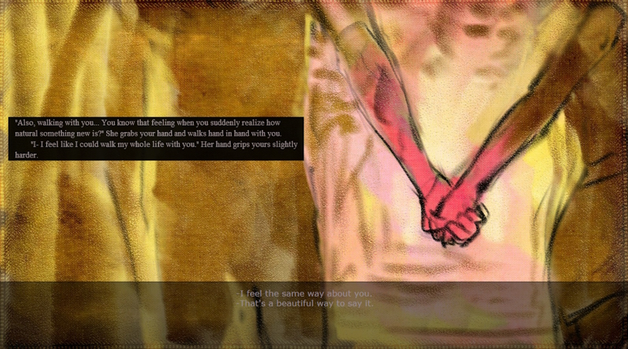

06/06/2026

I've always had a soft spot for romance in stories, ever since I was a kid. Like, an obsessive fascination for it. Probably to the point I should probably get a therapist. There are a lot of interesting things to talk about how romances are written, how they're used as narrative tools, and also how they're received by readers and players. [...]
29/05/2026
If you've had the patience or the curiosity to click on this blog, you probably already know what's the deal with this website I've made. Or at least, you're probably a bit curious about the actual reasons as to why I've dedicated this entire website just to talk about that one thing, and that one thing only. [...]
26/05/2026
Well, technically the foundations were finished yesterday, but I still need some time too add all the blog and art pages. I'm still very proud of what I made, this is the first real coding project I made without any kind of deadline or external pressure. [...]